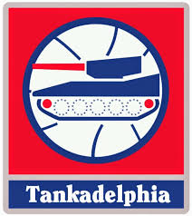

3 More Questions
3.1 The Third Question
Picking up where I left off, I can articulate two other questions (i.e. “third” and “fourth” questions) that I sought to answer in my earlier review of existing research.12
In considering the meaning of “value” as I did before, I think answers for this question contextualized in terms of either basketball production or monetary cost are equally valid. Some general managers might be fascinated with the superstar potential of a particular prospect and, consequently, would be willing to give up other assets (e.g. experienced players, future picks, etc.) to move up in the draft and pick that talented player. On the other hand, some may be more concerned with cap considerations or trying to “beat the market” by moving into slots that are most “cost-effective”.13
3.2 The Fourth (and Final) Question

Finally, the last question that I looked to answer (for now) is “Can tanking be justified?”14
Even though this fourth question does not explicitly include the word “value”, I believe that its answer is still dependent upon the word’s interpretation. In this context, it is probably easiest to interpret its answer on the basis of on-court basketball production, as opposed to off-court monetary cost. In particular, I think a reasonable analysis of the question might compare the chances of a team winning the championship against the likelihood of improving the team with a higher draft pick. In this case, it might be necessary to evaluate “value” on a relative scale because winning a championship is a binary variable (i.e win or no win), whereas the unit of measurement is different for cost (i.e. $ million for rookie contracts) ands for the researcher’s statistic(s) of choice for quantifying basketball production (e.g. an “all-in-one” metric like win shares (WS)).
As you can see from this caveat-filled discussion (as well as the one in my last post) the term “value” is fairly ambiguous. Nevertheless, having defined it in a specific way for each question, I think we can now better contextualize the answers provided by existing research.
Actually, to be truthful, I only postulated these questions while looking for answers to my previous two questions. The third question can be simply stated as “What is the relative trade value of picks?”↩
I mentioned the term “cost-effective” in my previous post without formally defining it. In reality, economics terms such as “cost-effective”, “beating the market”, and “return on investment” should be formally defined in an NBA context by the person conducting the cost analysis. In any matter, I think that the reader can probably correctly infer the author’s intended meaning if the author neglects to define such terms. Thus, I am interested in trying to come up with the answers to the third question from both kinds of “value” perspectives—purely basketball production and purely monetary cost. In particular, I would say that the monetary interpretation is interesting for identifying general managers who have tried to “outsmart” their colleagues.↩
The term “tanking” refers to a team that intentionally loses to try to improve its odds of winning the NBA lottery. The 14 teams that miss the playoffs are entered into a lottery that determines draft order. The teams with the worst records have the best chances of winning a higher draft slot. More detail about the lottery can be found at the satirical NBA Tankathon website.↩